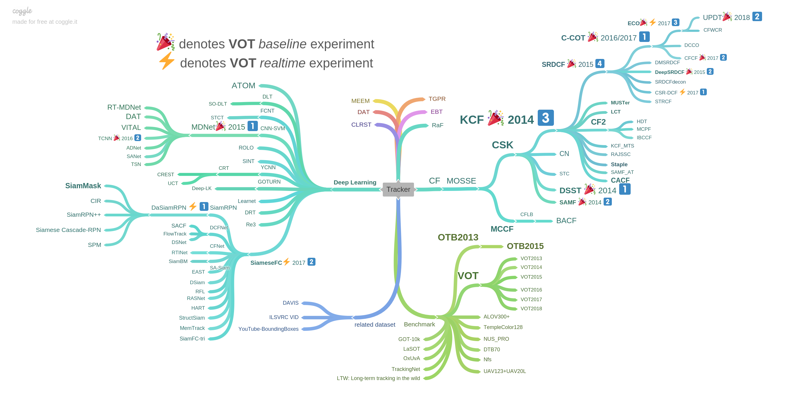

作者：huuuuusy
修改日期：2019-09-05

图源： 王强博士
本文基于王强博士的roadmap并添加相关论文的链接。
OBT
OTB100【TPAMI’15】 【Object tracking benchmark】
OTB50【CVPR’13】【Online object tracking: A benchmark】
VOT2018【ECCV’18】【The sixth Visual Object Tracking VOT2018 challenge results】
VOT2017【ICCV’17】 【The Visual Object Tracking VOT2017 Challenge Results】
VOT2016【ECCV’16】【The Visual Object Tracking VOT2016 challenge results】
VOT2015【ICCV’15】【The Visual Object Tracking VOT2015 challenge results】
VOT2014【ECCV’14】【The Visual Object Tracking VOT2014 challenge results】
VOT2013【ICCV’13】【The Visual Object Tracking VOT2013 challenge results】
GOT-10K【2018】 【GOT-10k: A Large High-Diversity Benchmark for Generic Object Tracking in the Wild】【GitHub】【Project】
LaSOT【CVPR’19】【LaSOT: A High-quality Benchmark for Large-scale Single Object Tracking】【Project】
OxUvA【ECCV’18】【Long-term Tracking in the Wild: A Benchmark】【Project】【GitHub】
TrackingNet【ECCV’18】【TrackingNet: A Large-Scale Dataset and Benchmark for Object Tracking in the Wild】 【Project】 【GitHub】
UAVDT【ECCV’18】【The Unmanned Aerial Vehicle Benchmark: Object Detection and Tracking】【Project】
AMP【ICCV’17】【Beyond Standard Benchmarks: Parameterizing Performance Evaluation in Visual Object Tracking】
Nfs【ICCV’17】【Need for Speed: A Benchmark for Higher Frame Rate Object Tracking】【Project】
DTB70【AAAI’17】【Visual Object Tracking for Unmanned Aerial Vehicles: A Benchmark and New Motion Models】【GitHub】
UAV123【ECCV’16】【A Benchmark and Simulator for UAV Tracking】 【Project】
TColor-128【TIP’15】【Encoding color information for visual tracking: Algorithms and benchmark】【Project】
NUS-PRO【PAMI’15】 【NUS-PRO: A New Visual Tracking Challenge】【Project】
ALOV300+【PAMI’14】【Visual Tracking: An Experimental Survey】【Project】
PTB【ICCV’13】【Tracking Revisited using RGBD Camera: Unified Benchmark and Baselines】 【Project】
Datasets
Publications
MOSSE【CVPR’10】【Visual object tracking using adaptive correlation filters】
MCCF【ICCV’13】【Multi-Channel Correlation Filters】【Project】
CSK【ECCV’12】【Exploiting the circulant structure of tracking-by-detection with kernels】
CN 【CVPR’14】【Adaptive color attributes for real-time visual tracking】【Project】
STC【ECCV’14】【Fast Tracking via Spatio-Temporal Context Learning】
SAMF【ECCVW’14】【A Scale Adaptive Kernel Correlation Filter Tracker with Feature Integration】【GitHub】
DSST【BMVC’14】 【Accurate Scale Estimation for Robust Visual Tracking】【TPAMI’17】 【Paper】【Project】
KCF 【TPAMI’15】【High-Speed Tracking with Kernelized Correlation Filters】 【GitHub】
CACF【CVPR’17 Oral】【Context-Aware Correlation Filter Tracking】【GitHub】
Staple【CVPR’16】【Staple: Complementary Learners for Real-Time Tracking】 【Project】【GitHub】
RAJSSC【ICCVW’15】【Joint Scale-Spatial Correlation Tracking with Adaptive Rotation Estimation】【Poster】
KCF_MTS【ICCVW’15】【Multi-Template Scale-Adaptive Kernelized Correlation Filters】【GitHub】
LCT【CVPR’15】【Long-term Correlation Tracking】【IJCV’18】【Paper】【GitHub】
MUSTer【CVPR’15】【MUlti-Store Tracker (MUSTer): A Cognitive Psychology Inspired Approach to Object Tracking】【Project】
CF2【ICCV’15】【Hierarchical Convolutional Features for Visual Tracking】【Project】 【GitHub】
SRDCF【ICCV’15】【Learning Spatially Regularized Correlation Filters for Visual Tracking】【Project】
STRCF 【CVPR’18】【Learning Spatial-Temporal Regularized Correlation Filters for Visual Tracking】【GitHub】
CSR-DCF【CVPR’17】【Discriminative Correlation Filter with Channel and Spatial Reliability】【Supp】 【GitHub】
SRDCFdecon 【CVPR’16】【Adaptive Decontamination of the Training Set: A Unified Formulation for Discriminative Visual Tracking】 【Project】
DeepSRDCF 【ICCV’15】【Convolutional Features for Correlation Filter Based Visual Tracking】 【Project】
DMSRDCF【ICPR’16 Best Paper】【Deep Motion Features for Visual Tracking】
C-COT【ECCV’16】【Beyond Correlation Filters: Learning Continuous Convolution Operators for Visual Trackin】 【Project】 【GitHub】
CFCF【TIP’18】【Good Features to Correlate for Visual Tracking】 【GitHub】
ECO【CVPR’17】【ECO: Efficient Convolution Operators for Tracking】 【Supp】【Project】 【GitHub】
UPDT【ECCV’18】【Unveiling the Power of Deep Tracking】
CFWCR【ICCVW’17】【Correlation Filters With Weighted Convolution Responses】 【GitHub】
ATOM【CVPR’19 Oral】【ATOM: Accurate Tracking by Overlap Maximization】【GitHub】
DLT【NIPS’13】【Learning A Deep Compact Image Representation for Visual Tracking】【Project】
FCNT【ICCV’15】【Visual Tracking with Fully Convolutional Networks】【GitHub】【Project】
CNN-SVM【ICML’15】【Online Tracking by Learning Discriminative Saliency Map with Convolutional Neural Network】【Project】
MDNet【CVPR’16】【Learning Multi-Domain Convolutional Neural Networks for Visual Tracking】【GitHub】【Project】【VOT Presentation】
RT-MDNet【ECCV’18】【Real-Time MDNet】
DAT【NIPS’18】【Deep Attentive Tracking via Reciprocative Learning】【GitHub】【Project】
VITAL【CVPR’18 Spotlight】【VITAL: VIsual Tracking via Adversarial Learning】【GitHub】【Project】
TCNN【2016】【Modeling and Propagating CNNs in a Tree Structure for Visual Tracking】【Code】
ADNet【CVPR’17 Soptlight】【Action-Decision Networks for Visual Tracking with Deep Reinforcement Learning】【Supp】【Project】
SANet【CVPRW’17】【SANet: Structure-Aware Network for Visual Tracking】【Project】
TSN【ICCV’17】【Robust Object Tracking based on Temporal and Spatial Deep Networks】
ROLO【2016】【Spatially Supervised Recurrent Convolutional Neural Networks for Visual Object Tracking】【GitHub】【Project】
SINT【CVPR’16】【Siamese Instance Search for Tracking】【Project】
YCNN【2016】【Once for All: a Two-flow Convolutional Neural Network for Visual Tracking】
GOTURN【ECCV’16】【Learning to Track at 100 FPS with Deep Regression Networks】【GitHub】【Project】
DeepLK【ICRA’18】【Deep-LK for Efficient Adaptive Object Tracking】
Learnet【NIPS’16】【Learning feed-forward one-shot learners】
DRT【TIP’17】【Deep Relative Tracking】
Re3【2017】【Re3 : Real-Time Recurrent Regression Networks for Object Tracking】
SiameseFC【ECCV’16】【Fully-Convolutional Siamese Networks for Object Tracking】【GitHub】【Project】
SiamFC-tri【ECCV’18】【Triplet Loss in Siamese Network for Object Tracking】【GitHub】
MemTrack【ECCV’18】【Learning Dynamic Memory Networks for Object Tracking】
StructSiam【ECCV’18】【Structured Siamese Network for Real-Time Visual Tracking】
HART【NIPS’17】【Hierarchical Attentive Recurrent Tracking】【GitHub】
RASNet【CVPR’18】【Learning Attentions: Residual Attentional Siamese Network for High Performance Online Visual Tracking】
RFL【ICCVW’17】【Recurrent Filter Learning for Visual Tracking】
Dsiam【ICCV’17】【Learning Dynamic Siamese Network for Visual Object Tracking】【GitHub】
EAST【ICCV’17】【Learning Policies for Adaptive Tracking with Deep Feature Cascades】【Supp】
SA-Siam【CVPR’18】【A Twofold Siamese Network for Real-Time Object Tracking】【GitHub】
CFNet【CVPR’17】【End-to-end representation learning for Correlation Filter based tracking】【Supp】【GitHub】【Project】
DCFNet【2017】【DCFNet: Discriminant Correlation Filters Network for Visual Tracking】【GitHub】
SiamRPN【CVPR’18 Spotlight】【High Performance Visual Tracking with Siamese Region Proposal Network】【GitHub】
DaSiamRPN【ECCV’18】【Distractor-aware Siamese Networks for Visual Object Tracking】【GitHub】
SiamMask【CVPR’19】【Fast Online Object Tracking and Segmentation: A Unifying Approach】【GitHub】【Project】
SiamRPN++【CVPR’19 Oral】【SiamRPN++: Evolution of Siamese Visual Tracking with Very Deep Networks】【Project】
Siamese Cascade-RPN【CVPR’19】【Siamese Cascaded Region Proposal Networks for Real-Time Visual Tracking】
SPM【CVPR’19】【SPM-Tracker: Series-Parallel Matching for Real-Time Visual Object Tracking】